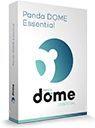

The Best Antivirus Programs For Windows, Android, iOS & Mac in 2025
In a hurry? This is the best antivirus for 2025:
- TotalAV: Great protection from malware with loads of extra features like a VPN, password manager, firewall and computer clean up. Get the best protection of 2025 here.
There are dozens of antivirus programs on offer, and they all claim to provide the best protection at the best price. While this is may be slightly confusing and a bit overwhelming, it’s actually not so hard to find the perfect antivirus for your needs.
Do note however that some less known antivirus brands are actually malware in disguise, so you should only download those programs that have proven to be trustworthy and legit.
At it's most basic, your antivirus program must include protection against all new forms of malware — not just viruses, but also spyware, ransomware, rootkits, worms and trojans — all the antivirus brands on our list offer advanced protection against all these types of malware.
Most of the leading antivirus programs can rightly be called full-suite Internet security packages, offering various cybersecurity features such as:
- Parental safety controls — advanced tools that protect children online.
- Virtual Private Network (VPN) — a type of secure Internet connection that protects your privacy when surfing online.
- Password manager — for creating numerous strong passwords and storing them safely in one master account.
These and other security features improve the overall protection of your device’s built-in security systems. And the more secure your device is, the more you reduce the chance of exposing your private banking, credit card or other valuable personal information to cyber criminals.
So how can you find out which antivirus brands offer the best security for your devices? We did the research, comparing the best antivirus programs available and testing different parameters such as malware detection, effect on system resources, security features and value for money.
This is the result of our research.
An overview of the best antivirus programs for 2025:
- 1. TotalAV — Best overall antivirus for Windows and android smartphones (also very good for iPhone and Mac).
- 2. Norton — Offers very advanced parental controls and works well on all devices.
- 3. Intego — Best antivirus for Mac users (only works on macOS).
- 4. Panda — Great value-for-money security package, suitable for Windows PC and android.
- 5. Bitdefender — Highly acclaimed full security suite.
- Plus 2 more decent antivirus programs to check out.
- Feature comparison of our top antivirus recommendations for 2025.
- FAQ about antivirus programs.
How we tested the Top Antivirus Programs for 2025:
We analysed more than 20 different security products, and have therefore developed extremely high expectations when it comes to cyber security. Before we can make a recommendation, an antivirus product must meet these requirements:
- Strong protection against all types of malware. We only endorse software that has a proven track record against the newest malware threats. Viruses are just one type of malware — Nowadays your devices need protection against spyware, rootkits, ransomware, and anything else that could cause you harm online.
- Minimum drag on system resources. Our top list only includes programs that are lightweight and don't slow down your computer (even if it's not the newest model).
- Easy and User-Friendly. Because everyone needs malware protection, no matter how tech-savvy, our top recommendations are all easy to set up and use.
- Packed with extra security features. The antivirus programs we recommend offer improvements to your device’s native security systems beyond protection against malware.
- Great value for money. Our top picks all have money back guaratees so you can try before you buy. They also offer packages for protecting numerous devices and a bunch of added features that make getting online protection a valuable investment indeed.
Well-Known Brands That We Don't Recommend:
You may notice that some popular antivirus brands are not listed here. Note that there are over 50 antivirus brands and we wanted to limit our list to the very best available. There are some pretty famous brands that didn't make the cut because they were not quite good enough to earn one of our top spots.
- Avast & AVG. Avast (who also own AVG) stand accused of selling user data to large corporations for marketing purposes. Due to this scandal, in a time when online privacy has become a real issue, we cannot recommend any Avast products on this site any longer.
- ESET. This Slovak company makes great antivirus software and contributes immensely to the field of online security, but we believe that it is more suitable for corporations and businesses and that the home edition of its antivirus product is not the most easy to use.
- Kaspersky. Although the high quality of this antivirus product cannot be denied, there have been allegations about collusion with the Russian government that we cannot ignore at the time of this writing.
1. TotalAV — Best Overall Antivirus Package

TotalAV is a relatively new kid on the antivirus block but it is well known among experts as one of the best, offering superior protection, many super useful features and simply unbeatable value for money. After our detailed review, we can confidently say that TotalAV is a fantastic choice.
TotalAV is an Avira “white label”, meaning that award-winning, German-made Avira’s software powers TotalAV’s antivirus engine. So — although TotalAV is a relatively new brand — it runs on some of the most trusted cybersecurity technology available.
What we particularly love about TotalAV is the incredibly simple, easy-to-use design. It looks great and just feels right, working in the background without harassing you and just doing its job. If you’re not a tech wizard looking for complicated features, you’ll love the simplicity of TotalAV.
TotalAV also ticks all the right boxes when it comes to the vast range of extra security features, which include everything but the kitchen sink: Ransomware protection, password management, a Virtual Private Network and advanced phishing protection.
Bottom Line:
TotalAV has one of the most powerful antivirus engines, a great range of features and superior user friendly design. If you're looking to protect all your devices, download TotalAV! There is currently no better overall antivirus package available and via our link you currently get an incredible 80% discount, so hurry before this offer ends!
Get TOTALAV - Protect Your Devices!
2. Norton — Best Antivirus Software For Families

Norton is a pioneer in the industry and a 39 times winner of PCMag.com's Editors Choice award. The parental control features are also second to none.
Norton is not the cheapest offer out there, but it still offers great value with a ton of great features such as a VPN, cloud storage and unparalleled parental controls.
Norton’s award winning antivirus engine is so powerful, they even offer a 100% Virus Protection Promise. They’re so confident in their antivirus and malware protection, if your device gets a virus their experts can’t remove, you get your money back.
The software runs on pretty much all operational systems and allows you to add up to ten devices. Just buy your desired subscription, and download the software or app onto any device. Mobile users of Android and iOS can also use Norton antivirus to protect their mobile traffic.
Norton truly is a great product — it does exactly what it says on the tin, is reliable, and very powerful. It’s one of the best choices if you’re looking for an antivirus solution for your entire household.
Bottom Line:
If you're looking for an easy to use security package that provides powerful, all-around protection for you and your entire family, Norton is one of the best in the business.
Get NORTON - Protect Your Devices!
3. Intego — Best Security Suite For Mac
Intego provides very good protection exclusively for Mac users, which includes a powerful antivirus, as well as nice additional features such as parental control filtering, a clean up tool and Mac backup options.
Intego’s antivirus scanner achieved perfect scores by Independent Test Lab AV-Test in Germany. It is also super fast and lightweight.
Many Mac users mistakenly think they cannot get affected by malware. Intego really enhances the Mac security experience - protecting against phishing attacks, ransomware and other nasties.
Bottom Line:
Intego offers a fab range of extra security features and its outstanding protection against all kinds of malware makes it our top choice for Mac users. It's focus on MacOS really shows in terms of design, improving on the existing security and device optimization tools. It also offers great value for money, plus you get a 50% discount if you sign up via our link.
Get INTEGO - Protect Your Mac!
4. Panda — Advanced Machine Learning Antivirus
Panda Security consistently racks up Editor’s Choice awards and trophies. Some notable past awards include multiple Real-World Protection tests from AV-Comparatives. Other awards include an Editor’s Choice award from PCMag. Panda offers AI based virus detection across three different pricing plans, making it ideal for any budget.
We love that you get real-time anti-virus protection, a firewall, plus a VPN (albeit a limited one) on even the basic plan. Other notable features are an external device scanner, parental controls, ransomware protection and a password manager (on the top plans only). Do note however that Panda don't currently offer an iPhone app.
There is quite a difference in price between the most basic and top-tier packages and we would probably go with the middle one (Panda Complete), which offers ransomware protection and most bells and whistles at a fantastic price. All plans come with a 30 day money back guarantee so you can try these out before committing.
Bottom Line:
Though maybe not as well known as brands like TotalAV and Norton,Panda offers all the most important security features you could possibly need at a great price point and if you don’t need all of these advanced features, Panda offers great value on all their plans and for every budget.
Get PANDA - Protect Your Devices!
5. Bitdefender — Best for Advanced Users
BitDefender has been steadily rising in the ranks over the last several years, with 2018 seeing them supply antivirus software to more than 500 million users worldwide. Also, as of 2018, they stand in fifth place in the global market share rankings for Windows antivirus vendors.
Bitdefender Total Security 2025 is the company's top home antivirus product. It won the Product of the Year award presented by AV-Comparatives after continuously winning Advanced+ ratings in the categories of Real World Protection, Malware Protection, Performance, Malware Removal, and False Alarms.
Bitdefender offers an amazing range of features, which includes real-time antivirus protection, PC tune-up tools, VPN, parental controls, password management and much more.
The only slight downside is that Bitdefender is not the easiest security suite to use. Installation and setup take a while to finish and the package - though extremely powerful - can be a bit cumbersome for technophobes.
Bottom Line:
Bitdefender offers one of the most powerful and extensive security suites for a decent (though not cheap) price. But it's not for everyone. The slightly complicated menu is ideal for tech-savvy users, but Norton and TotalAV are definitely easier to use.
Get BITDEFENDER - Protect Your Devices!
6. PC Protect — Best Value Security Package
PC Protect includes almost every online security function you could think of, at a bargain price point that is hard to beat, including (but not limited to):
- Real-Time Antivirus
- System Tune-up
- QuickScan or Full System scan
- Advanced Firewall
As we learned in our in-depth review, PC Protect uses the award winning Avira antivirus engine, making it a worthy investment in terms of internet security. When you add to that a whole bunch of extra protective features, you can rest assured that you will be covered from all angles.
If your household has a bunch of devices, PC Protect will cover them all. The software works on Windows, Mac, android, iPhone and more.
PC Protect is also incredibly easy to use. Users seem to love this software, rating it 4.6 out of 5 on TrustPilot (with over 600 reviews)
System Boost is another welcome feature as it uninstalls or stops unnecessary programs and processes, as well as cleans your files up to improve your PC’s boot time and ensures that it’s operating at its optimal performance.
Bottom Line:
PC Protect 'Ultimate Antivirus' offers an antivirus engine, real-time protection, firewall, ad blocking, disk cleaning, startup program management, a browser manager and more at an incredible price. It is also super easy to use and doesn't hog system resources, making it a great option for anyone who needs a full security suite, without breaking the bank.
Get PC PROTECT - Protect Your Devices!
Bonus. BullGuard — Best for Gamers
BullGuard is a Danish antivirus brand that consistently wins prizes from various independent testing labs for their antivirus packages.
BullGuard’s antivirus engine also achieved top marks in all of our tests. Besides a powerful antivirus engine, this European brand also offers a lot of great security tools, such as anti-phishing and anti-ransomware protection, parental controls and online identity protection.
One standout feature that not many antivirus programs offer is Game Booster. This feature frees up system resources to ensure smooth gameplay. It also avoids pop-up ads and other annoyances from interrupting your gaming session.
Enabling BullGuard’s Game Booster avoids your PC from slowing down during play time, by isolating all other active apps to a single CPU core.
Bottom Line:
If you regularly play games on your PC, BullGuard should definitely be your number one choice of antivirus. And even if you never play games, their powerful machine learning antivirus technology coupled with awesome features at a decent price make this an excellent antivirus product for non-gamers too. If you're not sure this is the best choice for you, take advantage of their 30-day free trial, test the software before you buy and then decide.
Get BULLGUARD - Protect Your Devices!
Feature Comparison of the Top Antivirus Programs
| Brand | Firewall | System Optimization | Password Manager | VPN | Real-time protection | Free Version |
| TotalAV | Yes | Yes | Yes | Yes | Yes | Yes |
| Norton | Yes | No | Yes | Yes | Yes | No |
| Intego | Yes | Yes | No | No | Yes | No |
| Panda | Yes | Yes | Yes | Yes | Yes | No |
| Bitdefender | Yes | Yes | Yes | Yes | Yes | No |
| PC Protect | Yes | Yes | Yes | No | Yes | No |
| BullGuard | Yes | Yes | No | No | No | No |
Top Antivirus Programs - Frequently Asked Questions
🏆 What is the best antivirus for Windows users?
All of the top recommendations on our list above work on Windows 10 and also on older versions such as Windows 7. We recommend TotalAV as the best FREE antivirus program for Windows users. Norton is our top pick for paid antivirus software.
🍎 What is the best antivirus for Apple / Mac users?
Most of our recommendations work on all operating systems - including Apple / Mac. Intego is a great choice if you own a Mac, as it's been especially designed for Apple products only.
Another good recommendation is Norton. Check out our top list of the Best Mac Antivirus Software 2025 for more details.
📲 What is the best antivirus for android smartphones?
Our favourite antivirus app for android is Norton. Norton comes with up to 10 licenses, so you can just download each license onto any device, including your mobile phone. Another good choice is the TotalAV app for android. Although it is not free like their desktop software, at only $2.95 it's a real bargain. Click here for more information about our top recommendations for mobile devices.
📱 What is the best antivirus app for iPhone users?
If you think your iPhone is safer than an android phone you are right, but we still recommend you get a decent antivirus app to protect your phone from data theft, phishing attacks and banking/shopping peace of mind. Our top choice for iPhones is Norton. Another good app for iOS is Bitdefender.
❓ What are the main things to note before downloading an antivirus software?
It can be difficult to pick one antivirus program when there are so many choices out there.
Below we have listed the main factors to take into consideration before you download an antivirus program:
- Make a features shortlist. All antivirus programs protect against malware and all of the ones that made it onto our list are top notch in this respect. But there are a bunch of other security features that are also important. If you use only one password for all your logins you should definitely use a password manager. If you download torrents, get a security package that includes a VPN. If you want to protect your whole family, make sure your chosen software includes parental controls like those offered by Norton 360.
- Decide which device you want to protect. Not all antivirus programs work on all platforms, so you need to make sure your device is covered. Check the FAQ section above to see which programs we recommend for each device. If you have an older laptop or PC, make sure the antivirus package you choose will not slow down your system too much. TotalAV is a good lightweight choice as you can test if everything still works smoothly for free, before upgrading to the paid version.
- Decide how many devices you want to protect. You probably have more than one device such as a mobile phone, laptop and tablet. If you want to protect a bunch of devices, get a package that offers a decent discount for multiple licenses such as Norton.
- See how easy the software is to use. Almost all of the top brands on this list offer a “no questions asked” money-back guarantee. Use this time to get to know the software and see if you find it easy to use. If the software annoys you, chat to customer support about it and get a refund. Then go and test another one until you hit gold.
- TotalAV
- Panda
- Bitdefender

1. TotalAV - $19.00
Award-winning antivirus. Trusted by 25 million users around the world.
 ✔ In 2024 TotalAV ranked No1 in AV-TEST industry testing scores
✔ In 2024 TotalAV ranked No1 in AV-TEST industry testing scores
✔ Multi-level virus protection and outstanding detection rate
✔ Includes VPN, Firewall and many other security enhancements
✔ Unbeatable in terms of Value-For-Money
2. Panda - $27.00
Advanced machine learning antivirus with many added features at an incredible price + a FREE VPN. Highly recommended new security package!
✔ Highest levels of protection
✔ A free VPN included in every package
✔ Clean user interface
✔ No performance impact
3. Bitdefender - $42.49
Bitdefender security solutions are constantly collecting top marks from various testing centers worldwide.
 ✔ PC MAG Editor's Choice - 6 years in a row!
✔ PC MAG Editor's Choice - 6 years in a row!
✔ Absolute security for Windows, Android, Mac® and iOS
✔ 500 million satisfied users worldwide
✔ Parental control offers parents additional online security